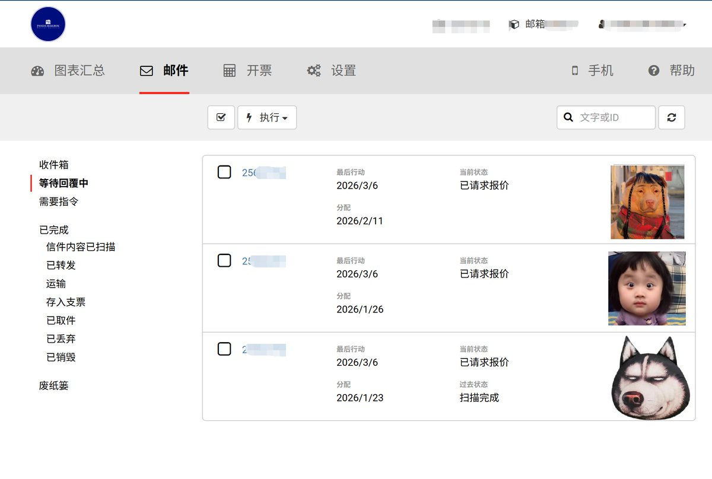

我不知道是不是我一个人这么想的
在我的观念里，包括快递邮寄以及转运费用以及交通费用，总之一切和运输行业相关的业务的费用都是属于硬性成本，是不存在议价空间的
对个人零售行业是这样，但批量运输可能就不是这个价格
只不过我现在还没有到足够进行批量运输的量和需求
所以对于议价这件事，我觉得还是直接接受好了

在我的观念里，包括快递邮寄以及转运费用以及交通费用，总之一切和运输行业相关的业务的费用都是属于硬性成本，是不存在议价空间的
对个人零售行业是这样，但批量运输可能就不是这个价格
只不过我现在还没有到足够进行批量运输的量和需求
所以对于议价这件事，我觉得还是直接接受好了

今日泥伏雷正式开工，先联系美国房东，准备把几封IRS信件和银行卡信件都转寄回国。
因为 ATMB 房东通常也会在转寄服务上赚一点差价，所以第一步还是先询价，确认价格没问题再安排转寄。 https://t.co/o2l2FnO6P4 https://t.co/k2B4UqZDpN
因为 ATMB 房东通常也会在转寄服务上赚一点差价，所以第一步还是先询价，确认价格没问题再安排转寄。 https://t.co/o2l2FnO6P4 https://t.co/k2B4UqZDpN